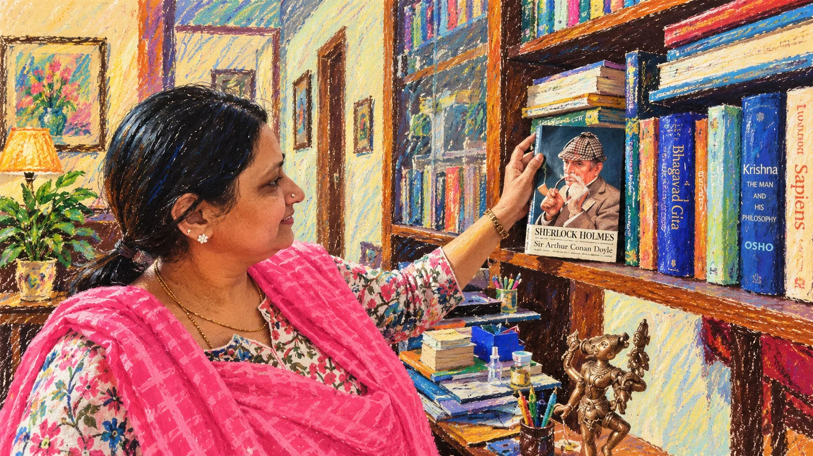

Research trail
Sources, notes & publication hygiene.
The visible site is designed to feel light. This page keeps the provenance underneath it — especially useful because story counts, audience measures and some institutional details change over time.
Where sources differ, the discrepancy is preserved rather than silently resolved.

Editorial rules used
How this site handles changing or conflicting information.
- Story counts are shown as dated milestones, not one timeless number.
- Audience, reach, streams and donated-story counts are not summed together.
- Library locations are presented as multiple reported access points.
- Siruvani appreciation, Sevalaya memento and Paavai award are labelled differently.
- Endrendrum Anbudan is treated as an ongoing series in line with the dossier’s recommendation.
- Current professional-profile items are not presented as independently audited employment records.
Source register
Selected public references.
Primary content map for biography, chronology, books, awards, impact, media and source-quality notes.
Research file used to structure this site.About, current episodes and the project’s public positioning.
Open source ↗Current feed status, years active and indexed episode count.
Open source ↗Long-form profile at the 1,600+ story milestone.
Open source ↗Interview / profile covering schedule, story count, books, libraries and ad-free philosophy.
Open source ↗Digital Audio Library inauguration and 2,500-story donation.
Open source ↗Institutional education / career evidence.
Open source ↗Professional history: Doordarshan, education, events, consulting, enterprises and CSR.
Open source ↗Publisher product page.
Open source ↗Publisher product page for the 2026 children’s book.
Open source ↗Publisher page for the two-part work.
Open source ↗Launch of the periodical series in Aug 2025.
Open source ↗Example showing the series continuing into 2026.
Open source ↗Children’s education / Tamil retelling discussion.
Open source ↗Interview used alongside the interview transcript for short pull-quotes.
Open source ↗2026 book-launch / introduction event.
Open source ↗